QANTICA'">Transforming ideas into scalable IP before they reach the market.
A scalable process line that sustains volume without losing standards.
Reduced timelines, clearly defined stages, and traceable outputs. Each IP enters, moves through the pipeline, and exits classified. Predictable and repeatable.
Authorship always remains entirely with the writer. The system accompanies the work throughout its development.
Thousands of IPs fail to receive proper evaluation every year. Qantica gives them a structured path in, processing at scale without sacrificing analytical depth. Every IP that enters the pipeline receives a complete reading.
“The industry today chooses between scale and depth. Qantica resolves that trade-off through infrastructure.”
A unified intelligence layer connecting two operational systems.
QSS analyzes, QIP improves, and the Marketplace monetizes.
Market Analysis · 3 LEVELS
A transmedia proposal the market currently lacks: budgeting, scalability, gaming, music, merchandising.
Cross functional interaction between market, creators and social media.
Auction infrastructure. Distribution channel mapping and commercialization pathways.
IP Improvement
SHOWROOM
ACQUISITION
Three stages. No arbitrary curation: every work that meets formal requirements enters the pipeline and receives structured diagnosis.
Certification, Segmentation and Value Assessment
Certification:
Author KYC, IMDb registration, Work-to-author linkage, Blockchain cryptographic hashing, AI vs. Human origin verification.
Segmentation:
Scene-based structuring, Metadata integration, Preparation for QSS analysis.
Valorization:
Prose maturity, Writer development stage identification.
Aptitude Across 20 Criteria
Structure, Characters, Pacing, Internal Logic, Style.
Validation & Legal Shielding
Pipeline Entry or Return with Diagnosis
If threshold surpassed → enters QIP pipeline. Otherwise → receives diagnostic report for iteration. No work left without feedback.
The writer submits the validated and certified screenplay.
The Tutor analyzes the work against the 100 sub-criteria and creates a diagnostic.
The work receives an Improvement Points Index (IPM) and a clear roadmap.
Interaction with the Tutor to iteratively optimize and reduce the IPM.
Reaches the standard threshold and advances to QSS and commercial opportunities.
Analyzes narrative, format, market, and distribution to identify positioning gaps and define what needs improvement.
The Tutor guides structure, characters, and pacing, expanding into audience and distribution strategy when needed. It also provides curated film references and IMDb-supported case studies, helping creators identify successful pathways and comparable works that can guide the evolution of their IP.
The system identifies the best format pathway, adapting each work across film, short-form, social, and emerging formats.
“When an IP fails to find its place, it is rarely a question of quality. What it lacked was curation, format, market positioning, or a distribution channel. The method works across all four dimensions and opens viable alternatives.”
Before a product enters production, we already know whether it has gaming potential.
Automated Gaming Viability Analysis
Every approved screenplay is also evaluated as a potential gaming asset, without adding time to the creative process.
Transmedia Strategy from Early Development
Game type, platform, and scale are defined before production begins. This is not a late stage spin off, but part of the project’s original packaging.
Game Design Document Finalized
The system generates a fully parameterized GDD, the industry standard document used for video game development, ready for studio implementation.
QSS does not change the work.
It analyzes it, contextualizes it, and positions it. It operates in parallel with QIP throughout narrative improvement, delivering to the Marketplace an IP with a clearly defined sales roadmap.
Exchange with QIP
It connects every narrative decision to market context. While the Tutor strengthens the work, QSS identifies its audience, the formats it supports, and the commercial positioning it can realistically achieve. Improvement is never done blindly.
Complete Transmedia Strategy
QSS builds the complete package: budget, scale, cast, gaming, music, and merchandising. The work evolves from a well told screenplay into an IP with projected value.
Marketplace Placement Roadmap
Once the work reaches the threshold, QSS delivers it with a complete market roadmap: identified audience, optimal channels, and suggested format. Commercial positioning no longer starts from zero.
“QSS is what transforms a screenplay into an IP ready for the market.”
Two environments, one destination. The work gains validation through its community while being presented exclusively to platforms and studios.
Public Showcase
Private Acquisition
“An innovation driven model that maximizes IP value and elevates the quality of commercial exposure at scale.”